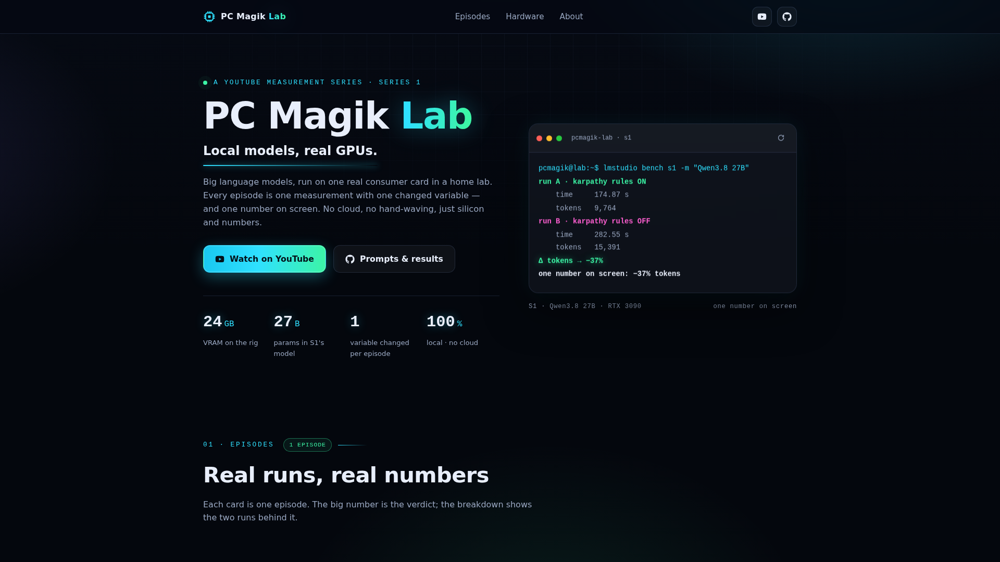
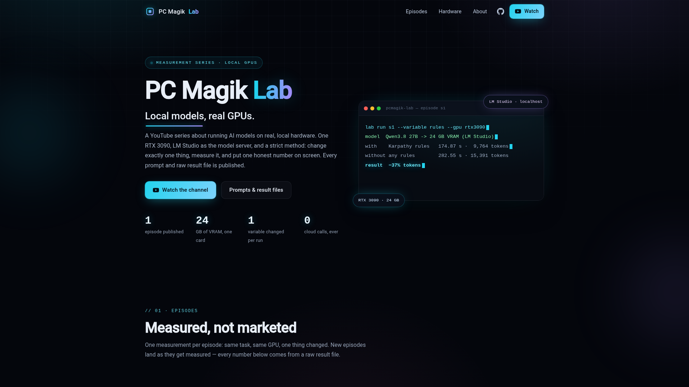

01 / THE EXPERIMENTS
Less hype.
More evidence.
Same task. Different approach.
Explore exactly what the models produced.
01 benchmark · 02 measured runsBENCHMARK 001TASK: EASY
Do better rules
make better code?
Qwen3.8 27B / Karpathy skills vs bare
A closer look at the numbers.

BAREqwen3.8-27b · pi
26 min 34 stime
60,318tokens
60%thinking
965code lines

KARPATHYqwen3.8-27b · pi
19 min 37 stime
47,903tokens
53%thinking
780code lines
↳These are the models’ actual outputs. No touch-ups. No cherry-picked snippets.
Open a live demo and decide for yourself.
View the source ↗
02 / THE PROCESS
No black box.
Just the whole picture.
A benchmark is only useful if you can check it.
Here’s what goes into every experiment.
01
One variable at a time
Each comparison keeps the other conditions fixed. Only the subject of the test changes: a rules file, a harness or a model.
{ }
Metrics from the run
Time, tokens, thinking share and code lines. Inspect the original metrics.json alongside every model output.
⌘
Real hardware
Ryzen 5 PRO 3600, 32 GB DDR4 ECC and an RTX 3090 with 24 GB VRAM. Local models are served through LM Studio.
>_
The exact prompt
The full input, byte for byte. Read the task ↗ or open prompt.txt next to each run to reproduce the test.
CURIOSITY IS THE STARTING POINT.
Don't take our word.
Take a look.
Follow the experiments. Inspect the source.
See what AI builds when the benchmark gets real.
{kind=link}
{kind=link}